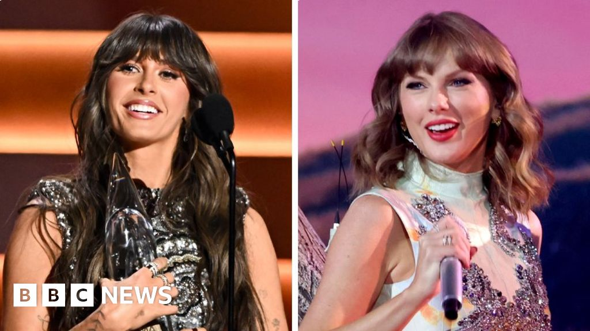
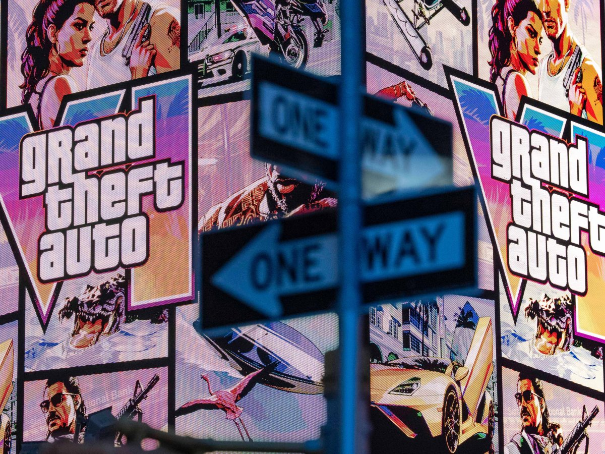
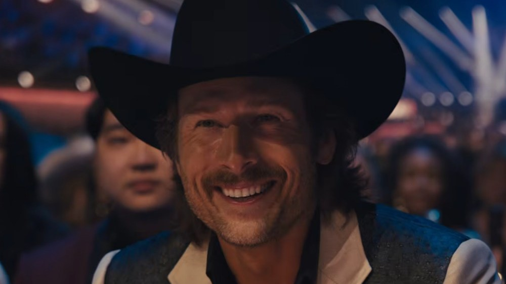

Ella Langley sweeps the CMAs, and Taylor Swift comes back to the stage

Wednesday’s 60th CMA Awards in Nashville belonged to Ella Langley. She won all six awards she was up for, including entertainer of the year, and the CMA says it’s the most wins anyone has ever had in a single year. “Choosin’ Texas,” the longest-running No. 1 in Billboard chart history, won single and song of the year, and Dandelion won album of the year. She beat host Lainey Wilson, last year’s winner, for the top prize. “At this point, I’m sick of me,” Langley joked. “I could quit tomorrow and have the best career of my life.” Miranda Lambert, who produced and co-wrote with her, won three awards.
Taylor Swift performed at the CMAs for the first time in 13 years. She sang her Toy Story 5 song “I Knew It, I Knew You” on a Toy Story-themed blue guitar, mixed in her 2006 hit “Our Song” with Keith Urban on banjo, and brought out Brad Paisley, Little Big Town, Sugarland and Brooks & Dunn. She also presented Brooks & Dunn’s lifetime achievement award. Swift lost single of the year to “Choosin’ Texas,” so she stays at 12 CMA Awards. Other winners: Chris Stapleton (male vocalist), the Red Clay Strays (vocal group) and Stephen Wilson Jr. (new artist).
Listen on Spotify →
·
 BBC News →
·
Billboard full winners list →
·
USA Today on Swift’s single of the year loss →
BBC News →
·
Billboard full winners list →
·
USA Today on Swift’s single of the year loss →
GTA VI reviews are in, and it’s tied for the highest-rated game ever

Reviews of Rockstar’s Grand Theft Auto VI came out ahead of today’s launch on PS5 and Xbox Series X|S, the first new GTA in 13 years. It has a 99 on Metacritic, which ties the 1997 Legend of Zelda: Ocarina of Time for the highest score in the site’s history. IGN gave it a 10 and called it “the single most impressive video game I have ever played.” The Guardian, GameSpot, Eurogamer and The Washington Post also gave it top marks. The Post called it an “astonishing American epic,” and the New York Times said it “largely lives up to its sky-high expectations.”
Critics praised the detail of Leonida, the game’s version of Florida, and the relationship between its two leads, Jason and Lucia. The Verge said it “lives up to the hype,” though it found the combat clunky and the weapon wheel frustrating. Sensor Tower estimates more than 15.8 million pre-orders as of Nov. 17, worth about $1.54 billion. Reuters reported that fans are booking vacation days for the launch.
 Official Trailer 2 on YouTube →
·
Official Trailer 2 on YouTube →
·
 Deadline critics roundup →
·
Deadline critics roundup →
·
 The Verge review →
·
The Verge review →
·
 Al Jazeera →
Al Jazeera →
Glen Powell goes country in the first Comeback King trailer

Universal released the first trailer Wednesday for The Comeback King, a comedy written by Judd Apatow and Glen Powell and directed by Apatow. Powell plays Aubrey King, a country star whose career falls apart after he breaks up with Missy (Madelyn Cline), the world’s biggest pop star. She puts out a song accusing him of cheating, true or not, and he goes back to college to finish his degree. There he meets Sam (Cristin Milioti), a professor who isn’t impressed by her famous student. Deadline’s advice: “Try not to think too hard of Taylor Swift.”
Kumail Nanjiani, Vanessa Bayer, Tig Notaro and Mike Birbiglia co-star. Jelly Roll, Brad Paisley, Miranda Lambert, Shaboozey, Chris Stapleton, Brandi Carlile, Luke Bryan and Reba McEntire play themselves. It’s in theaters Feb. 5, 2027.
Bottom of the news
- Bond, day two: Jeff Bezos said he was heavily involved in picking Robert Pattinson. Amazon screen-tested five actors, each doing three scenes in full costume.
- Skydance will combine Warner Bros. Television Group and Paramount Television Studios as Warner Bros. Television Studios, launching in early 2027. It also named new film chiefs at Paramount and Warner Bros. Pictures.
- M. Night Shyamalan and Nicholas Sparks released the trailer for Remain, a ghost-story romance with Jake Gyllenhaal and Phoebe Dynevor, in theaters Feb. 5, 2027.
- Taylor Swift’s “I Knew It, I Knew You” won best original song at the Hollywood Music in Media Awards, the same night as her CMA performance.
- Dancing with the Stars hit a season high of 7.64 million viewers for its semifinals, its best semifinal numbers in nine years.
- Netflix set Ginny & Georgia season 4 for Jan. 21 and released the Selling Sunset season 10 trailer.
- Johnny Depp’s Ebenezer led Tuesday’s domestic box office with $2.3 million, for $22.7 million total.